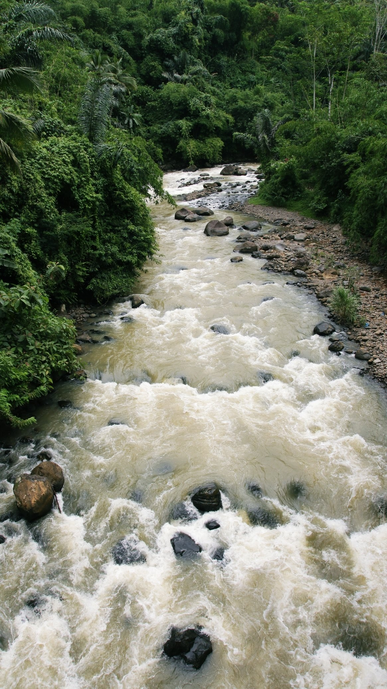

Destinations
14 destinations shown on the website.
| Destination | Region | Category | Price from | Rating | Status | Actions |
|---|---|---|---|---|---|---|
 Borobudur TempleMagelang, Central Java |
Java | Culture & heritage | Rp 50.000 | ★ 4.88 5,120 reviews |
Published | |
 Ubud & TegallalangUbud and Tegallalang, Gianyar, Bali |
Bali | Culture & nature | Rp 15.000 | ★ 4.87 4,290 reviews |
Published | |
 Mount BromoBromo Tengger Semeru National Park, East Java |
Java | Mountain & volcano | Rp 28.000 | ★ 4.92 3,310 reviews |
Published | |
 Gili IslandsNorthwest coast of Lombok, West Nusa Tenggara |
Nusa Tenggara | Beach & island | Rp 15.000 | ★ 4.89 2,650 reviews |
Published | |
 Nusa Penida & KelingkingNusa Penida, Klungkung, Bali |
Bali | Beach & island | Rp 25.000 | ★ 4.96 2,140 reviews |
Published | |
 Kawah IjenIjen volcanic complex, Banyuwangi and Bondowoso, East Java |
Java | Mountain & volcano | Rp 85.000 | ★ 4.93 1,890 reviews |
Published | |
 Labuan Bajo & KomodoLabuan Bajo, West Manggarai, East Nusa Tenggara |
Nusa Tenggara | Beach & island | Rp 127.500 | ★ 4.95 1,720 reviews |
Published | |
 Lake TobaLake Toba and Samosir Island, North Sumatra |
Sumatra | Nature & culture | Rp 20.000 | ★ 4.84 1,180 reviews |
Published | |
 Dieng PlateauDieng, Wonosobo and Banjarnegara, Central Java |
Java | Mountain & nature | Rp 25.000 | ★ 4.80 980 reviews |
Published | |
 Mount RinjaniLombok, West Nusa Tenggara |
Nusa Tenggara | Mountain & volcano | Rp 150.000 | ★ 4.90 940 reviews |
Published | |
 Raja AmpatRaja Ampat, Southwest Papua |
Papua | Beach & marine nature | Rp 450.000 | ★ 4.98 860 reviews |
Published | |
 Citarik River RaftingCitarik River, Sukabumi, West Java |
Java | Nature & adventure | Rp 225.000 | ★ 4.82 760 reviews |
Published | |
 Bunaken Marine ParkBunaken and Manado Bay, North Sulawesi |
Sulawesi | Beach & marine nature | Rp 150.000 | ★ 4.91 610 reviews |
Published | |
 Tana TorajaTana Toraja highlands, South Sulawesi |
Sulawesi | Culture & nature | Rp 30.000 | ★ 4.86 520 reviews |
Published |
Showing 14 of 14